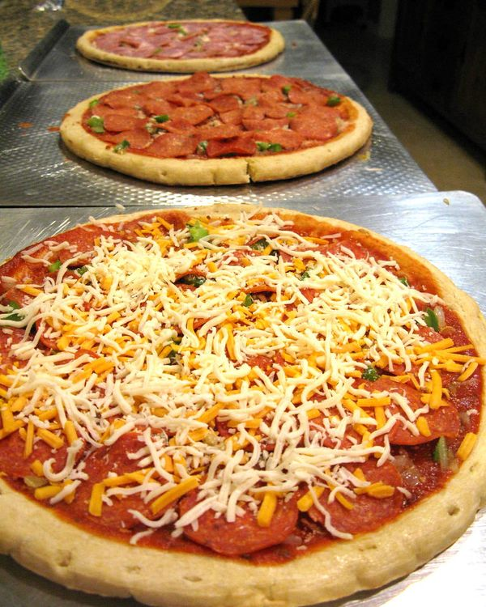
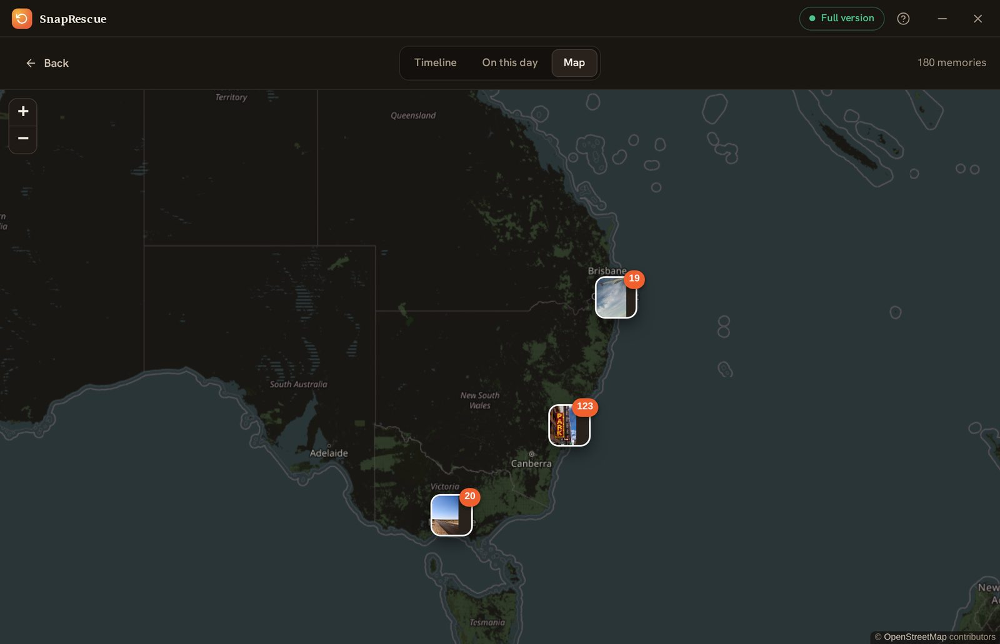
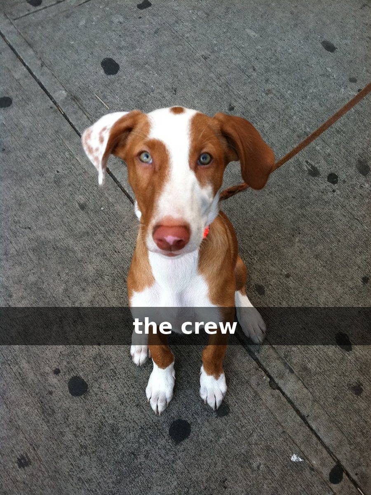
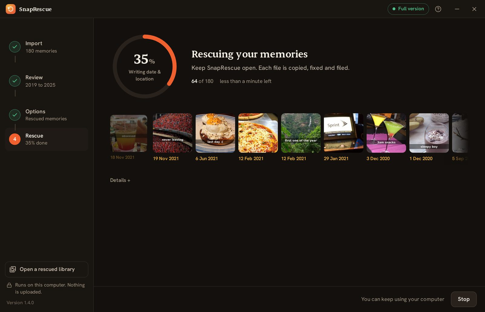
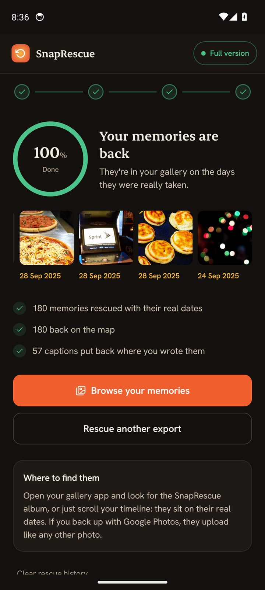
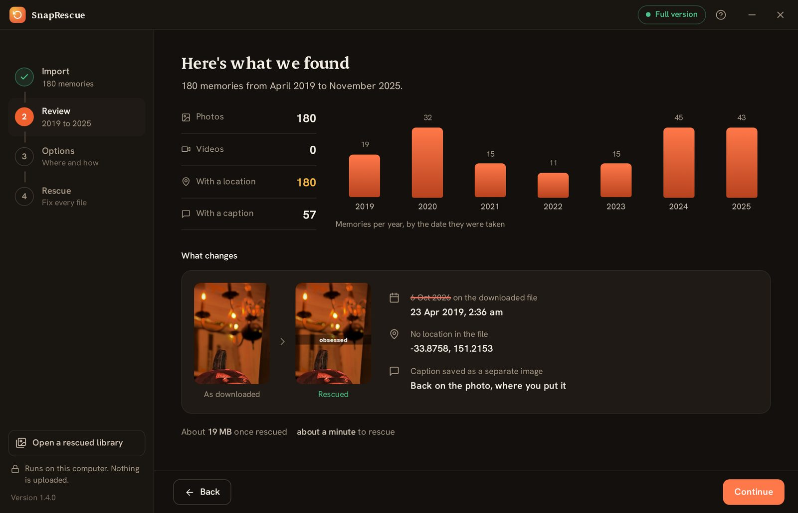
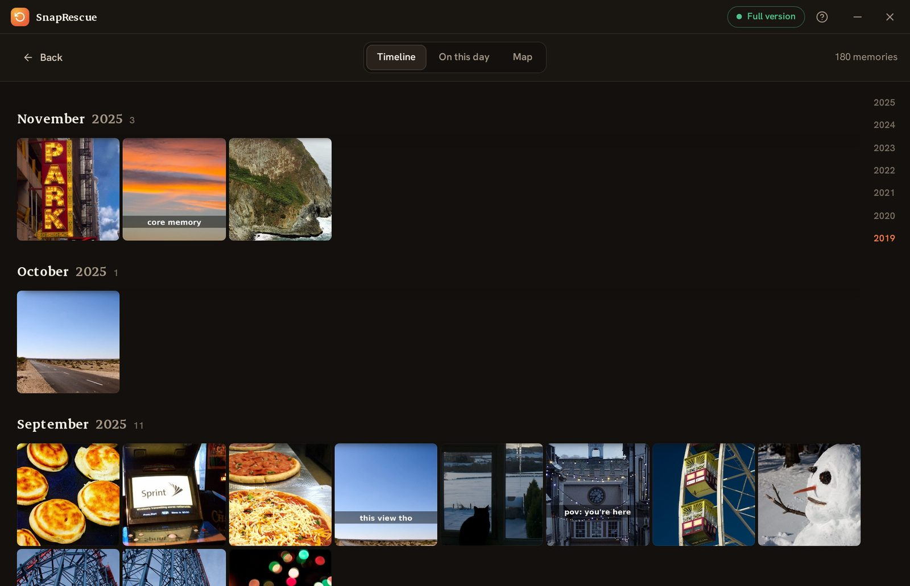
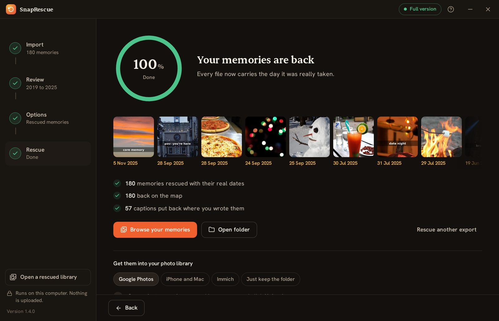

Tus recuerdos de Snapchat, de vuelta en el día en que ocurrieron.
La exportación de Snapchat mete cada foto y vídeo en tu biblioteca con la fecha de hoy. SnapRescue lee las fechas y los lugares que Snapchat guarda en un archivo aparte y los vuelve a escribir en cada recuerdo, con los textos incluidos. En tu propio ordenador o móvil, sin subir nada.
Los primeros 100 archivos gratis · Windows, Mac y Android · 9,99 $ una sola vez por todo
Hoy'19 4 23Hoy'21 12 31

Hoy'20 8 7Hoy'23 6 14Hoy'22 1 2Hoy'24 7 19
Exportar es lo fácil. Después, cada foto dice hoy.
Snapchat te da las fotos y vídeos en bruto, pero las fechas y el GPS viven en un archivo memories_history.json aparte que tu galería nunca lee. Impórtalos y 2.000 recuerdos de años de tu vida se amontonan en la fecha de hoy, sin mapa, sin orden, sin historia.
SnapRescue reúne cada archivo con sus metadatos reales antes de que toque tu galería.
Fotos
Tu exportación perdió cuatro cosas. Las cuatro vuelven.
Horas locales realmente correctas
Snapchat guarda cada momento en UTC. Otras herramientas lo pegan en bruto, así que un snap nocturno en el extranjero aparece a la hora del desayuno. SnapRescue usa el GPS de cada foto para convertirlo a la hora local real.
La lista de Snapchat (UTC)09:30
→
Bali, donde ocurrió17:30
De vuelta en el mapa
Las coordenadas vuelven a cada archivo, así que Google Fotos, Apple Fotos e Immich colocan cada recuerdo donde ocurrió. El mapa de SnapRescue agrupa los recuerdos cercanos para que puedas volver a recorrerlos.

Los textos donde los escribiste
Snapchat guarda tus textos y stickers como imágenes transparentes aparte. SnapRescue vuelve a colocar cada uno sobre su foto o vídeo, justo donde lo pusiste. Arrastra la línea para comparar.

Tal como se descargóRescatado
Vídeos fechados al segundo
La mayoría guarda varios snaps al día, y los nombres de archivo solo indican el día. SnapRescue lee el reloj que Snapchat deja dentro de cada vídeo, para que cada uno tenga su propia hora y su propio lugar, no los de otro.
08:15:30Bondi
13:42:07Manly
21:00:05Newtown
GPS + nombres de lugares
Coordenadas integradas para que el mapa funcione, más una ubicación legible como «Byron Bay» escrita.
Carpetas por fecha
Organizado automáticamente en carpetas por año con nombres de archivo con fecha, un archivo navegable al instante.
100% privado
Todo se ejecuta en tu ordenador. No se sube nada, sin cuenta, ningún servidor ve tus fotos.
Pausa y reanuda
¿30.000 recuerdos? Para cuando quieras y continúa justo donde lo dejaste. Nada se repite.
La app de verdad, en tu ordenador o en tu móvil.
Elige tu exportación, revisa lo que se encontró y mira cómo cada recuerdo recupera su fecha. Luego recórrelos por año, por «un día como hoy» o en el mapa. Una sola licencia vale para Windows, Mac y Android.



Mira exactamente lo que se encontró

Recórrelos por meses

Sabe qué se restauró
De un ZIP desordenado a un archivo precioso.
Pide a Snapchat
En la app: Ajustes → Mis datos → Enviar solicitud. Te envían un enlace de descarga. (Nunca tocamos tu cuenta.)
Ponlo en una carpeta
Snapchat puede enviar varios archivos ZIP. Ponlos todos en una sola carpeta. No hace falta que los descomprimas tú.
Apunta y listo
Abre SnapRescue y selecciona esa carpeta. Descomprime y encuentra cada recuerdo con sus metadatos, automáticamente.
Arrástralo donde sea
Obtén carpetas limpias 2019/ 2020/ … listas para Google Photos, Apple Photos, Immich o donde sea.
Comparación basada en las funciones y precios publicados, junio de 2026. ExportSnaps y Memories Import son productos independientes; los detalles pueden cambiar, comprueba sus sitios.
Simple, justo, pago único
Pruébalo gratis. Desbloquea una vez.
Sin suscripción, a diferencia de cierto fantasma. Snapchat Plus cuesta 3,99 $ cada mes, para siempre. SnapRescue cuesta menos de 3 meses de eso, y luego es tuyo para siempre.
↩️ Garantía de reembolso de 30 días, sin preguntas
Pago seguro con Stripe · Pago único, sin suscripción · Windows, Mac y Android
Buenas preguntas
Lo que suelen preguntar.
En Snapchat: perfil → Ajustes ⚙️ → Mis datos → Enviar solicitud (marca «Incluir recuerdos»). Snapchat te envía un enlace de descarga, normalmente en pocas horas. Una biblioteca grande puede llegar en varios archivos ZIP; ponlos todos en una carpeta y apunta SnapRescue a esa carpeta.
No. SnapRescue nunca inicia sesión en Snapchat ni toca tu cuenta. Pides tus datos con la herramienta oficial «Mis datos» de Snapchat, y SnapRescue solo procesa el ZIP que te envían, totalmente en tu ordenador.
Nunca. Todo el procesamiento ocurre localmente en tu equipo. Tus recuerdos no salen de tu ordenador, y SnapRescue funciona sin cuenta. Lo único que pasa por internet es una pequeña comprobación de la clave de licencia al desbloquear la versión completa.
Todas las funciones en tus primeros 100 archivos, para que confirmes que funciona perfectamente con tus propias fotos y vídeos antes de pagar. Desbloquea una vez por 9,99 $ para procesar toda tu biblioteca.
Sí. Las fechas y el GPS se escriben tanto en vídeos como en fotos, y las capas de texto/pegatinas se fusionan en ambos. La calidad queda intacta; solo cambian los metadatos.
En un conjunto limpio de carpetas 2019/ 2020/ … que tú eliges, con la fecha y ubicación reales integradas en cada archivo, listos para arrastrar a Google Photos, Apple Photos, Immich, Lightroom o donde sea.
Importa las fotos y vídeos rescatados como cualquier otro. La fecha, el GPS y el texto se escriben dentro de cada archivo, así que Immich los lee al instante. Si usas una biblioteca externa (Immich escaneando una carpeta sin alterar tus originales), marca «Escribir también archivos XMP» en SnapRescue y se coloca un .xmp junto a cada elemento. Nota: un archivo XMP solo se lee junto a su foto o vídeo, nunca se sube solo.
Sí. Ese aviso de SmartScreen aparece con cualquier app nueva de un desarrollador independiente que aún no tiene historial de descargas con Microsoft. SnapRescue es seguro y funciona por completo en tu ordenador. Para abrirlo: haz clic en «Más información» y luego en «Ejecutar de todas formas». El aviso desaparece a medida que más gente lo descarga.
Windows, Mac (Apple Silicon e Intel) y Android ya están disponibles. La versión para iPhone está en camino. Compra una vez y las tendrás todas incluidas.
No dejes que años de tu vida caduquen en la nube de un fantasma.
Rescata tus recuerdos hoy. Gratis para los primeros 100.
SnapRescue es una aplicación nueva, así que Windows puede mostrar un aviso azul de «Windows protegió tu PC». Es normal con cualquier app nueva, y SnapRescue es totalmente seguro y funciona por completo en tu ordenador.
Para abrirlo: haz clic en Más información y luego en Ejecutar de todas formas.
✕
Windows protected your PC
Microsoft Defender SmartScreen prevented an unrecognized app from starting. Running this app might put your PC at risk.
More info
Run anywayDon't run
Esta es la ventana exacta que verás. Haz clic en Más información para que aparezca Ejecutar de todas formas.
SnapRescue no está en la App Store, así que macOS puede decir que «no se puede abrir porque Apple no puede comprobar si contiene malware». Es normal en apps fuera de la tienda, y SnapRescue es totalmente seguro y funciona por completo en tu ordenador.
Para abrirlo: haz doble clic en la app, cierra el aviso y ve a Ajustes del Sistema → Privacidad y seguridad, baja y pulsa Abrir de todos modos. En macOS 14 o anterior basta con clic derecho en la app y elegir Abrir. Solo hay que hacerlo una vez.
La mayoría de los Mac desde 2020 usan Apple Silicon (M1, M2, M3 y más nuevos); los más antiguos son Intel. ¿No sabes cuál tienes? Abre el menú Apple y elige Acerca de este Mac.
SnapRescue para Android se instala directamente desde aquí, no desde la Play Store, así que tu teléfono te pedirá permiso para instalarla y Play Protect puede mostrar un breve aviso de «aplicación desconocida». Es normal en una descarga directa, y SnapRescue es completamente seguro y funciona por completo en tu teléfono.
Para instalarla: toca Descargar, abre el archivo, activa Permitir desde esta fuente y luego toca Instalar de todos modos.
Android 8.0 y posterior. Tus primeros 100 archivos son gratis, igual que en la aplicación de escritorio.
La versión para iPhone de SnapRescue está en desarrollo. Déjanos tu correo y te avisaremos en cuanto esté en la App Store, con un código de descuento para primeros usuarios como agradecimiento por esperar.
Un solo correo cuando esté lista, nada más. Tu dirección nunca se comparte.